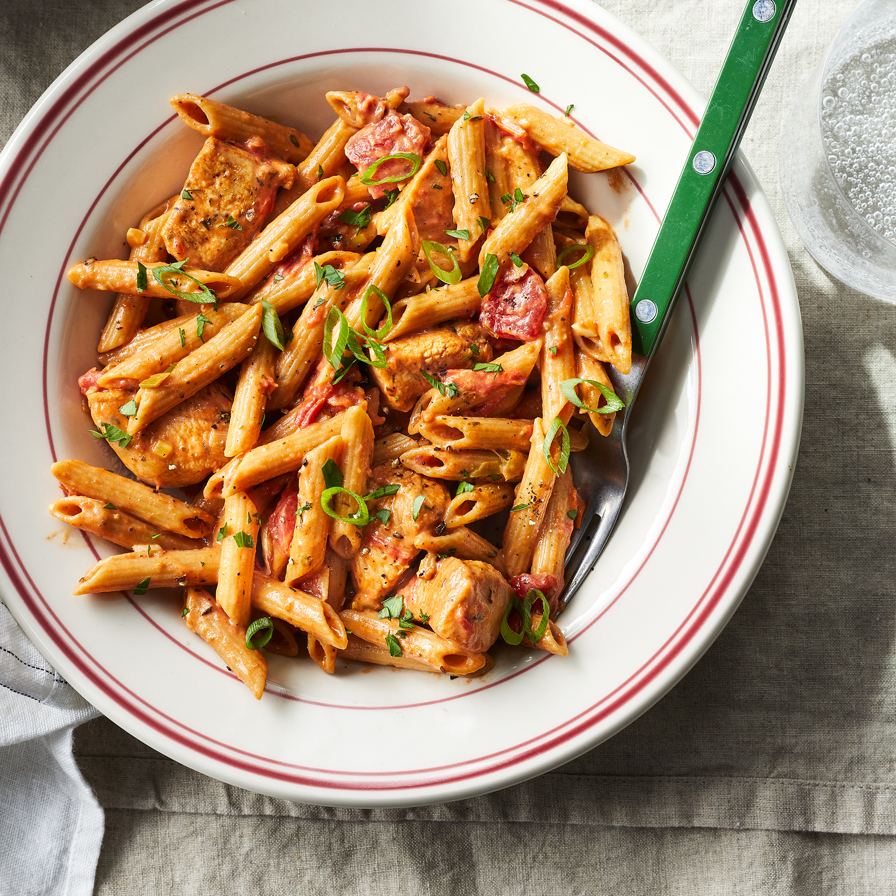

Chicken Pasta

credit: DOTDASH MEREDITH FOOD STUDIO & allrecipes.com
Description
Chicke and Pasta made in a Cajun style. Also creamy
Ingredients
- 4 ounces linguine pasta
- 2 boneless, skinless chicken breast halves, sliced into thin strips
- 2 teaspoons Cajun seasoning
- 2 tablespoons butter
- 1 green bell pepper, chopped
- ½ red bell pepper, chopped
- 4 fresh mushrooms, sliced
- 1 green onion, minced
- 1 ½ cups heavy cream
- ¼ teaspoon dried basil
- ¼ teaspoon lemon pepper
- ¼ teaspoon salt
- ⅛ teaspoon garlic powder
- ⅛ teaspoon ground black pepper
- tablespoons grated Parmesan cheese
Steps
- Boil pot of lightly salted water and add linguini pasta until al dente and drain.
- Coat chicken in cajun seasoning.
- Saute Chicken and add vegetables.
- Toss linguini with sauce and add grated parmesan cheeses.